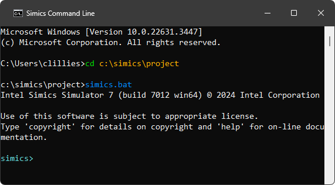
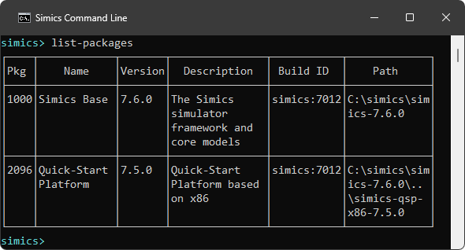
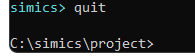

This section describes how to launch and exit the simulator.
This tutorial assumes that the user has followed the installation steps in the
installation section.
The screenshots below were taken on Windows, but the Linux version of the Intel Simics simulator behaves similarly.
-
First, let’s get a command prompt on the host machine.
- On a Windows host, use one of the following alternatives:
- Use the start menu and launch Command Prompt.
- If Windows Terminal is installed, launch this and start
open an instance of the Command Prompt profile.
- Press the
Win + r keys and enter cmd in the popped-up window.
- On a Linux host, refer to the documentation of your
Linux distribution about the instructions how to get access to command
prompt.
-
Once command prompt window is available, navigate to the project directory.

-
To launch the simulator, and to get its command prompt just run the simics.bat batch file (on Linux, the simics shell script is to be used instead by entering the ./simics command).

Simics has now been launched.
-
With the CLI available, we can try running the command list-packages, which lists the packages available to the current project:

There are also launch options available to customize what happens when launching the simulator.
To quit the simulator just enter the quit command:

Simics has a couple launch options that can be listed with the --help flag:
c:\simics\project>simics.bat --help
Usage: simics [options] [<file>|<target> ...] [--preset <name|file> ...] [<param>=<value> ...]
Common options:
--batch-mode quit on error or when returning to prompt
-e, --execute <command> execute a CLI command
-h, --help print this help or list all script parameters if
used with a file. All other options are ignored
-l, --list-targets list available targets
...
These are some of more commonly used options:
-
--list-targets - list available targets
List targets available in the project and then quit.
This can also be done from CLI with the list-targets command.
c:\simics\project>simics.bat --list-targets
+------------------------------------+--------------------+
| Target | Package |
+------------------------------------+--------------------+
|qsp-x86/clear-linux |Quick-Start Platform|
|qsp-x86/clear-linux-2c |Quick-Start Platform|
|qsp-x86/clear-linux-multi |Quick-Start Platform|
|qsp-x86/clear-linux-multi-no-network|Quick-Start Platform|
|qsp-x86/clear-linux-no-network |Quick-Start Platform|
|qsp-x86/firststeps |Quick-Start Platform|
|qsp-x86/uefi-shell |Quick-Start Platform|
|qsp-x86/user-provided-linux |Quick-Start Platform|
+------------------------------------+--------------------+
-
load a target
Specify a target to load and then continue in CLI. This is equivalent of first starting
the simulator and from CLI run load-target "qsp-x86/firststeps".
c:\simics\project>simics.bat qsp-x86/firststeps
-
--quiet - launch without startup text
Use --quiet (or -q) to launch the simulator without the startup text.
c:\simics\project>simics.bat --quiet --batch-mode
simics>
-
--batch-mode - run tasks and exit
With the --batch-mode, the simulator will simply run tasks from other launch options and then exit, without starting CLI. This can be useful when starting the simulator non-interactively, typically when running tests.
The simulators exit code will be zero on success, otherwise non-zero.
c:\simics\project>simics.bat --batch-mode
Intel Simics Simulator 7 (build 7012 win64) © 2024 Intel Corporation
c:\simics\project>
Here is a more advanced example, which starts the qsp-x86/firststeps target, runs for 0.1 second and then print the current time and then quit.
The two last steps use the -e option, where a command can be specified:
c:\simics\project>simics.bat --batch-mode qsp-x86/firststeps -e "run-seconds 0.1" -e "ptime"
┌────────────────────────┬─────────┬─────────┬────────┐
│ Processor │ Steps │ Cycles │Time (s)│
├────────────────────────┼─────────┼─────────┼────────┤
│board.mb.cpu0.core[0][0]│199600000│200000000│ 0.100│
└────────────────────────┴─────────┴─────────┴────────┘
c:\simics\project>
-
--stop-on-error
If there is an error when simulation is running, stop the simulation and interrupt the current script.
If combining --stop-on-error with --batch-mode, an error (such as error log) will cause the
simulation to exit with a non-zero exit code.
To sum up, in this section we launched the simulator, tried out a command and exited the simulator.